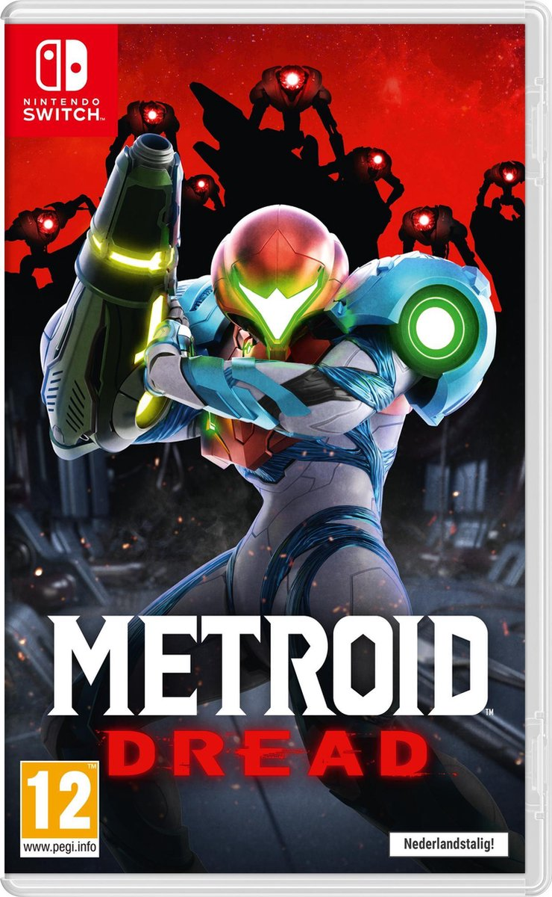

|  |
In Metroid Dread speel je als Samus Aran. Samus moet een planeet te onderzoeken waar de X Parasite gesignaleerd is. Die parasiet kan andere levensvormen overnemen,
om zich vervolgens verder te verspreiden. De Galactic Federation heeft speciale robots naar de planeet gestuurd om af te rekenen met de X Parasite, maar het contact
ging verloren. Daarom wordt Samus, die als enige immuun is voor de parasiet, naar de planeet gestuurd.
Die planeet is opgedeeld in allerlei zones en zit vol obstakels, die Samus niet zomaar kan verwijderen. Voor deze obstakels heeft Samus speciale vaardigheden nodig
om er doorheen te komen. Bij elke keer dat je een nieuwe vaardigheid verkrijgd, unlock je een nieuw gebied en voelt de gameplay weer vers.
Nadat je veel vaardigheden hebt verkregen, kan het lastig zijn om ze allemaal te onthouden en vloeiend te gebruiken. Ook is het soms lastig om te weten waar je
naartoe moet. Deze problemen horen natuurlijk bij de ervaring, het is tenslotte een metroidvania game en uiteindelijk lukt het altijd wel om je weg te vinden.
Naar mijn mening zit de wereld waar je doorheen moet komen geweldig in elkaar en elke keer als je een stukje verder komt voelt dat fijn. Geheimen ontdekken en andere
routes vinden passen perfect bij dit spel en is een mooie ervaring.
Metroid Dread is een soepele en behoorlijk uitdagende game die niet voor iedereen geschikt is. Je zit regelmatig vast, maar dat hoort bij de ervaring van het spel.
Het spel bevat ook extreem lastige boss fights. Je kun dan teruggaan naar plekken waar je bent geweest om sterker te worden en het wat makkelijker te maken.
Het enige probleem wat ik met Metroid Dread heb is de lengte van het spel. Mijn playthrough van dit spel duurde in totaal acht uur en ik had alle collectibles
verzameld. Als je het spel hebt uitgespeeld unlock je wel een hard mode, maar het enige wat hiermee veranderd is de hp en damage van de monsters die je tegenkomt.
Metroid Dread is een super leuk spel en ik raad het zeker aan, maar 60 euro voor een spel wat binnen een paar uur klaar is, vind ik iets teveel. |